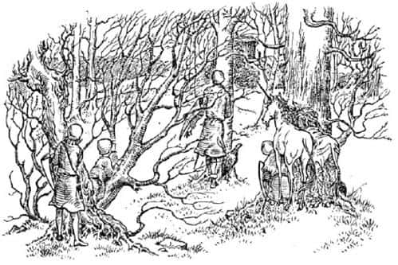
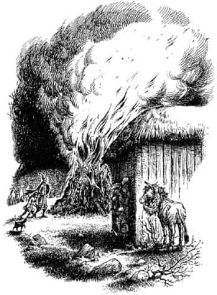

Ahır Tepe’deki Toplantı
Uzun bir süre ne konuşabildiler ne de gözyaşı dökebildiler. Sonra Tekboynuz ayağını yere vurdu, yelesini salladı ve konuşmaya başladı.
“Efendim” dedi, “fazla düşünmeye gerek yok. Maymunun planlarının çok ayrıntılı düşünüldüğü anlaşılıyor. Uzun süredir Tisrok’la gizli gizli haberleşiyor olmalı; belli ki aslan postunu bulur bulmaz, Tisrok’a donanmasını Cair Paravel dahil tüm Narnia’yı fethetmek için hazırlamasını söyledi. Artık Ahır Tepe’ye geri dönüp gerçeği açıklamak ve Aslan’ın bize reva gördüğü maceraya atılmaktan başka yapacak bir şey yok. Bir mucize olur da maymunun yanındaki otuz Calormenli’yi yenersek, yakında Cair Paravel’den gelecek büyük bir orduyla yapacağımız savaşta huzur içinde ölebiliriz.”
Tirian başını salladı. Çocuklara dönüp, “Dostlarım, artık kendi dünyanıza gitme zamanı geldi. Görevinizi yerine getirdiğinizden şüpheniz olmasın” dedi.
“A… ama daha bir şey yapmadık ki” dedi, korkudan değil de her şeyin böylesine karmaşık bir hal almasından dolayı titreyen Jill.
“Hayır” dedi Kral, “beni kurtardınız; dün gece ormanda önümden bir yılan gibi süzülerek Şaşkaloz’u getirdin; ve sen, Eustace, adamını öldürdün. Diğerlerinin bu gece ya da bundan üç gün sonra karşılaşacağı kanlı sonu paylaşmak için çok gençsiniz. Size kendi dünyanıza dönmeniz için yalvarıyorum; hayır emrediyorum. Böylesine genç savaşçıların ölmesine izin verirsem kahrolurum.”
“Hayır, hayır, hayır” dedi Jill (konuşmaya başladığında bembeyazdı, sonra kızardı, sonra tekrar bembeyaz oldu). “Gitmeyeceğiz. Ne söylediğin umrumda değil. Ne olursa olsun seninle beraberiz, değil mi Eustace?”
“Evet, bu kadar heyecanlanmaya gerek yok” dedi ellerini ceplerine sokmuş olan Eustace (zırh yeleğin ceplerine ellerini sokmasının ne kadar tuhaf göründüğünü unutmuştu). “Görüyorsun ki seçme şansımız yok. Geri dönmekten bahsetmenin ne yararı var? Bunu sağlayacak büyümüz yok!”
Bu çok mantıklı bir şeydi, ama Jill bunu söylediği için Eustace’ten nefret etmişti. Diğer insanlar heyecanlandığında, Eustace gerçekçi olmaktan çok hoşlanırdı.
Tirian yabancıların (Aslan istemedikçe) eve dönemeyeceğini anladığında, onların Güney Dağları’nı geçip emniyette olacakları Archenland’e gitmelerini istedi. Ancak yolu bilmiyorlardı, onlara rehberlik edecek biri de yoktu. Aynı zamanda Zıpır’ın da dediği gibi, Calormenliler Narnia’yı fethettiklerine göre bir iki haftaya kalmaz Archenland’i de alırlardı. Tisrok oldum olası kuzeydeki ülkeleri topraklarına katmak istiyordu. Sonunda Eustace ile Jill öyle çok yalvardı ki, Tirian onunla gelebileceklerini ancak kaderlerine razı olmaları gerektiğini söyledi; ya da onun deyişiyle, Aslan’ın onlara uygun gördüğü maceraya atılabileceklerini.
Kral’ın ilk düşüncesi, karanlık basmadan Ahır Tepe’ye (bu isim artık onları rahatsız ediyordu) gitmemeleriydi. Cüceyse, eğer gün ışığında giderlerse Calormenli nöbetçi hariç muhtemelen kimsenin olmayacağını söyledi. Maymun ve Kızıltüy, yaratıklara bu yeni kızgın Aslan - ya da Taş - hakkında o kadar korkunç hikâyeler anlatmıştı ki, yaratıklar çağrıldıkları o dehşet verici gece toplantıları dışında oraya gitmeye korkuyorlardı. Calormenliler ormancılıktan anlamazdı. Zıpır, gün ışığında bile kolaylıkla ahırın arkasında bir yere ulaşabileceklerini düşünüyordu. Maymun bütün hayvanları gece toplantısına çağırdığında ve tüm Calormenliler nöbetteyken bunu yapmak çok zordu. Toplantı başlayana kadar Şaşkaloz’u gözlerden uzak, ahırın arkasında saklayabilirlerdi. Bu iyi bir plandı; Narnialılar’a ani bir sürpriz yapmaktan başka şansları yoktu.
Bu plan üzerinde anlaştılar ve tüm grup yeni bir rota belirleyerek - kuzeybatıya - nefret ettikleri tepeye doğru yola çıktı. Kartal bazen tepelerinde ileri geri uçuyor bazen de Şaşkaloz’un sırtına tünüyordu. Kimse, Kral bile - çok acil bir durum hariç - Tekboynuz’a binmeyi düşünmezdi.
Jill ve Eustace yan yana yürüyordu. Gruba katılmalarına izin verilmesi için yalvarırken çok cesur davranmışlardı, ama şimdi kendilerini hiç de öyle hissetmiyorlardı.
“Pole” dedi Eustace fısıltıyla. “Sana gücümün kalmadığını söylesem iyi olur.”
“Bir şeyin yok, Scrubb” dedi Jill. “Savaşabilirsin. Aslını sorarsan be… ben titriyorum.”
“Titremek de bir şey mi” dedi Eustace. “Ben kusacak gibi hissediyorum kendimi.”
“Bundan bahsetme lütfen” dedi Jill.
Bir iki dakika sessizce yürüdüler.
“Pole” dedi Eustace az sonra.
“Ne var?” dedi Pole.
“Burada ölürsek ne olur?”
“Şey, sanırım ölürüz.”
“Demek istiyorum ki, bizim dünyamızda ne olacak? Uyanıp kendimizi o trende mi bulacağız? Ya da yok olup gidecek miyiz? İngiltere’de de ölmüş olacak mıyız?”
“Ha. Bunu düşünmemiştim.”
“Pencereden el salladığımı gördükten sonra, tren durduğunda bizi hiçbir yerde bulamamaları Peter ve diğerleri için epey garip olur! Ya da ikimizi - yani İngiltere’de de ölmüşsek.”
“Of!” dedi Jill. “Ne berbat bir düşünce.”
“Bizim için berbat değil ki” dedi Eustace. “Biz orada olmayacağız.”
“Keşke… ama hayır” dedi Jill.
“Ne diyecektin?”
“Keşke buraya gelmemiş olsaydık diyecektim. Ama demeyeceğim, demeyeceğim, demeyeceğim. Ölsek bile. Orada yaşlanıp aptallaşmaktansa ya da tekerlekli sandalyeye mahkûm olup ölmektense Narnia için savaşarak ölmeyi tercih ederim.”
“Ya da İngiliz Demiryolları’nda kazaya uğramaktansa!”
“Bu da nereden çıktı?”
“Şey, biz Narnia’ya gelirken - trende ani sarsıntı olmuştu ya, ben onun bir kaza başlangıcı olduğunu sanmıştım. Bu yüzden buraya geldiğimize öyle sevinmiştim ki.”
Eustace ve Jill konuşurken, diğerleri planlarını tartışıyor, kazanacaklarına dair inançları giderek artıyordu. Artık ne yapacaklarına karar vermişler; Narnia’nın akibetini, tüm o görkemli ve eğlenceli zamanların sona ereceği düşüncesini akıllarından çıkarmışlardı. Konuşmayı bıraktıkları an bu düşünce tekrar ön plana çıkacak ve onları mutsuz edecekti; konuşmaya devam ediyorlardı. Zıpır o gece yapılacakları düşünerek şimdiden seviniyordu. Yabandomuzunun, ayının ve muhtemelen bütün köpeklerin hemen onların yanına geçeceğinden emindi. Cücelerin Kıkır’a sadık olacağına inanmıyordu. Ateşin ışığında savaşmak ve ağaçların arasına girip çıkma şanslarının olması, zayıf taraf için bir avantajdı. Bu gece kazanırlarsa, birkaç gün sonra Calormen ordusuyla savaşıp yaşamlarını boşu boşuna tehlikeye atmaları gerekli miydi?

Neden ormanda ya da Büyük Çağlayan’ın ötesindeki çoraklıklarda saklanıp haydutlar gibi yaşamasınlardı? Konuşan hayvanlar ve Archenlandliler onlara katılacağından gün geçtikçe güçlenirlerdi. Sonunda saklandıkları yerden çıkıp (artık gevşeyen) Calormenliler’i ülkeden sürerlerdi ve Narnia yeniden doğardı. Kral Miraz zamanında da buna benzer bir şey olmamış mıydı?
Tirian bunu duyduğunda, “Peki Taş ne olacak?” diye düşünmüştü; bunu yapmak imkânsızdı, ta içinde hissetmişti, ama kimseye söylememişti.
Ahır Tepe’ye yaklaştıklarında herkes sessizleşti. Sonra casusluk başladı. Tepeyi ilk gördükleri andan ahırın arkasına ulaştıkları ana kadar iki saatten fazla zaman harcamışlardı. Sayfalar dolusu yazmadıkça doğru düzgün anlatılamayacak bir şeydir bu. Bir sığınaktan diğerine ulaşabilmek başlı başına bir maceraydı; arada uzun bekleyişler vardı; birçok yanlış alarm verildi. İyi bir izci ya da rehberseniz nasıl olduğunu bilirsiniz. Günbatımına yakın, ahırın on beş metre arkasındaki çobanpüskülü ağaçlarının ardında emniyetteydiler. Biraz kurabiye yiyip uzandılar.
Sonra en kötü bölüm başladı: Beklemek. Şanslarına çocuklar iki saat kadar uyuyabildiler; ama gece çöküp hava soğuyunca uyandılar ve işin kötüsü, çok susamış olmalarına rağmen içecek bir şey bulma şansları yoktu. Şaşkaloz gergindi, hafifçe titreyerek ayakta duruyor, bir şey söylemiyordu. Gongun sesi ve ahırın diğer tarafındaki ateş vaktin geldiğini haber verene kadar, Tirian başını Cevher’in yanına koymuş sanki Cair Paravel’deki kraliyet yatağındaymış gibi derin derin uyumuştu.
“Beni öp Cevher” dedi Kral. “Bu büyük ihtimalle son gecemiz. Herhangi bir konuda seni incittiysem, beni affet.”
“Sevgili Kral” dedi Cevher, “keşke, incitmiş olsaydın da ben de seni affetme şerefine erişseydim. Elveda. Çok eğlendiğimiz günler oldu. Aslan izin verseydi bile, sürdüğüm yaşamdan ve yaklaşan ölümümden başkasını dilemezdim.”
Sonra başını kanadının altına sokmuş uyuyan Keskingöz’ü (bu onu başı yokmuş gibi gösteriyordu) uyandırdılar ve ileriye, ahıra doğru süründüler. Birisi onu alana kadar kıpırdamamasını söyleyerek Şaşkaloz’u (artık kimse ona kızgın olmadığından bunu nazikçe söylemişlerdi) ahırın arkasında bırakıp yerlerini aldılar.

Ateş yakılalı çok olmamıştı, yeni yeni alevleniyordu; bulundukları yerden birkaç metre uzaktaydı. Narnia yaratıklarından oluşan büyük bir kalabalık ateşin diğer tarafındaydı. Tirian, ateşin aydınlığında, karanlıkta parlayan kedi gözleri gibi ışıldayan düzinelerce göz görmüş ama ilk bakışta kimlere ait olduklarını anlayamamıştı. Tirian yerini alır almaz gong sustu ve solundan bir yerlerden üç şekil ortaya çıktı. Birisi, Yüzbaşı Rishda Tarkaan’dı. İkincisi Maymun’du. Bir eliyle Tarkaan’ın elini tutmuş, mırıldanıp duruyordu, “Acele etme, bu kadar hızlı yürüme, hiç iyi değilim. Of zavallı başım! Bu gece yarısı toplantılarına katlanamaz oldum. Maymunların geceleri uyuması gerekir; ben bir tarlafaresi ya da yarasa değilim ki. Of zavallı başım.” Maymun’un diğer tarafındaysa, kuyruğu dimdik havada, yumuşak adımlarla vakur bir şekilde yürüyen Kızıltüy vardı. Ateşe yönelmişlerdi. Tirian’a öyle yakınlardı ki, o tarafa baksalar rahatlıkla görebilirlerdi. Neyse ki bakmadılar. Tirian, Rishda’nın Kızıltüy’e alçak sesle,
“Haydi kedi, yerine git. Rolünü iyi oynamaya bak” dediğini duydu.
“Miyav, miyav. Bana güvenebilirsin!” dedi Kızıltüy. Sonra ateşten uzaklaştı ve hayvanların arasında ön sıraya oturdu.
Her şey tıpkı bir tiyatro oyunu gibiydi. Narnialılar’ın oluşturduğu kalabalık, salondaki koltuklarda oturan insanlara benziyordu; ahırın hemen önündeki, ateşin yandığı, Maymun’la yüzbaşının kalabalığa hitap etmek üzere dikildiği küçük çimli alan sahne gibiydi. Sanki ahır dekor, Tirian ve dostlarıysa sahne görevlileriydi. Bu harika bir durumdu. İçlerinden biri öne çıksa tüm gözler ona çevrilirdi, ama ahırın yan duvarının gölgesinde kıpırdamadan durdukları sürece fark edilme olasılıkları yüzde bir bile değildi.
Rishda Tarkaan Maymun’u ateşin yakınına sürükledi. İkisi de yüzlerini kalabalığa çevirdi, ki bu da sırtlarının Tirian ve dostlarına dönük olduğu anlamına geliyordu.
“Evet, Maymun” dedi Rishda Tarkaan alçak sesle. “Bilge kişilerin sana bağışladığı sözleri söyle ve başını dik tut.” Konuşurken Maymun’u ayağıyla dürtüklemiş hatta tekmelemişti.
“Beni yalnız bırak” diye mırıldandı Külyutmaz. Sırtını doğrultarak yüksek sesle konuşmaya başladı, “Hepiniz beni dinleyin. Korkunç bir şey oldu. Çok fena bir şey. Narnia’da meydana gelen en kötü şey. Ve Aslan…”
“Taşlan de seni aptal” diye fısıldadı Rishda Tarkaan.
“Yani Taşlan demek istemiştim elbette” dedi Maymun, “buna çok kızdı.”
Hayvanlar yeni sorunun ne olduğunu duymak üzere beklerken korkunç bir sessizlik yaşandı. Ahırın yan duvarındaki küçük grup da tutmuştu nefesini. Sıradaki neydi acaba?
“Evet” dedi Maymun. “Şu anda, korkunç Taşlan aramızda, arkamdaki ahırdayken, uğursuz bir hayvan, o bin mil uzakta olsa bile kimsenin yapmaya cesaret edemeyeceği bir şey yaptı: Üstüne bir aslan postu geçirdi ve şu anda Aslan taklidi yaparak ormanda dolaşıyor.”
Jill bir an için Maymun’un delirdiğini düşündü. Tüm gerçeği anlatacak mıydı? Hayvanlardan dehşet ve öfke dolu sesler yükseldi. Hırlamalar duyuldu. “Kim o? Nerede? Ona dişlerimi bir geçirirsem!”
“Dün gece görmüşler” diye bağırdı maymun, “ama kaçmış. Bir eşekmiş. Sıradan, sefil bir eşek. Eğer içinizden biri o eşeği görürse—”
“Grrrr!” diye hırladı hayvanlar. “Evet, evet. Yolumuza çıkmasa iyi eder.”
Jill Kral’a baktı: Ağzı bir karış açıktı ve yüzünü bir dehşet ifadesi kaplamıştı. O an düşmanın planlarındaki şeytani kurnazlığı anladı. Yalanlarını, biraz da gerçekle karıştırarak çok daha güçlü bir hale getirmişlerdi. Artık gerçeği açıklamak için bir eşeğin aslan gibi giydirildiğini anlatmanın ne yararı vardı ki? Maymun sadece, “Ben söylememiş miydim?” diyecekti. Şaşkaloz’u aslan postunun içinde onlara göstermenin hiçbir yararı yoktu! Sadece onu parçalamalarına neden olurdu bu. “Bu tüm planlarımızı berbat etti” diye fısıldadı Eustace. “Bizi tongaya düşürdüler” dedi Tirian. “Lanetli çok lanetli bir zekâ bu” dedi Zıpır. “Yemin ederim ki bu yeni yalan Kızıltüy’ün başının altından çıkmıştır.”